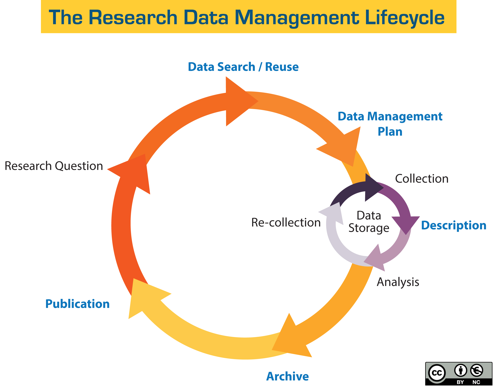

1.8 RDM, DMP and FAIR Principles
Description
In this unit you will learn to:
- Describe what the research data management requirements and standards are
Learning resources
Research Data Management
Research Data Management (RDM) entails various aspects beyond storage of data on a device. It also includes the planning of the data management, the assessment of storage solutions, the consideration for medium to long-term preservation, and the modality for sharing the data collected and used in a research project.

Image credit: UC Santa Cruz University Library
All these aspects can be described in a single document: the Data Management Plan (DMP). In order to properly address these aspects, however, it is necessary to follow recognized best practices for RDM, specifically the FAIR principles. In particular, the FAIR principles offer guidance about the metadata that should accompany the data so that it can be properly managed and retrieved. Furthermore, the process of data collection or creation should be documented, to increase transparency and facilitate verification. Finally, the management of data imply also to pay attention to the repositories that will be used to store, disseminate, and preserve the data.
Various representations of RDM exist, but it is usually admitted that data generation follows a rather straightforward cycle, called the “data lifecycle”. Although real life examples may slightly contradict the linear representations of the data lifecycle, it is important and beneficial to identify the main steps of RDM thanks to such representations. Concretely, data lifecycle can be divided like so:
- Assess and create an inventory of the data you expect to produce
- Establish a data management plan (‘DMP’) and document the data summary per dataset
- Think about data storage
- Provide contextual information about your research activities (Software/code/lab protocol)
- Deposit the data in a trusted repository
- Think about licencing for your resources
- Publish resources
A proper and thorough RDM brings many benefits. It guards against loss of data. It increases the chances for data reuse either by their creator, or by others, and appropriate licensing clarifies the data reuse modalities. RDM also allows to assess capacity for data storage and to anticipate and prepare actions for any challenges with personal or sensitive data. Moreover, it ensures research integrity through proper documentation of how data were collected and analysed.
Data Management Plan
The DMP is a formal document describing what data will be collected, used or generated within a project, how they will be organised, stored and secured, how they will be processed and described, and to what extent and under what conditions they will be disseminated and shared.
The DMP often includes a thorough assessment of the data's compliance with the FAIR principles as one of the key requirements for technically enabling open science. The DMP should address the main use case of project data management, but also more complex issues such as sensitive data, unusual data formats, storage of large datasets, etc.
Tools:
- DMP Online - Public DMPs
- ARGOS DMP - Data Management Plan creator
Although many funding frameworks (e.g. the EC's Horizon Europe framework) now include an obligation to provide a DMP, there are currently no existing standards for DMPs, which can vary from context to context or even be adapted for specific projects. However, there are a number of DMP templates that are often adapted from each other. The most widely used templates are the EC HE templates, which are close to the DCC templates. Services have also been set up to support the creation of DMPs, such as Argos by OpenAIRE or Opidor by the French Ministry of Research.
FAIR Principles

Sangya Pundir, CC BY-SA 4.0 https://creativecommons.org/licenses/by-sa/4.0, via Wikimedia Commons
The FAIR principles refer to these four basic principles: Findability, Accessibility, Interoperability and Reusability. The FAIR Principles represent a synthesis of established best practices in data management. They summarise the four key dimensions of RDM that ensure that data is fully equipped to be available and discoverable by people and machines. Although the term usually refers to data, it also includes the management of metadata: the four principles apply to both data and its metadata. At the same time, "data" must be understood in a broad sense: it's not just the data collected by the empirical sciences. In fact, any data with scientific value falls within the scope of FAIR. In this sense, the FAIR principles can be applied to the management of publications, digitised documents, images, art reproductions, etc., as long as a digital version exists, i.e. any source or output of the humanities and social sciences.
Findability ensures that data is discoverable. This requires the use of rich descriptions, the provision of relevant keywords and persistent identifiers to increase the chances of discovery. Some of the requirements are related to the standards of the digital ecosystem, and in this case are often provided by service providers: that's the case for persistent identifiers. Valid persistent identifier systems, in the sense of the FAIR principles, are of different types, but in most cases they are chosen by the service providers and may involve an assessment of whether they meet the requirements for a given dataset. Other requirements for findability are more contextual and depend on the type of data, the scientific field or the dissemination objectives. This is the case for basic metadata, which can be very different for a linguistic corpus than for a monograph: the richness of the metadata needs to be assessed in relation to the best practices of the target community, not just in relation to the objectives of a single project.
The principle of accessibility should not be confused with the concept of open access in scholarly communication. In fact, the FAIR Principles do not address the openness of content, but rather the stability and availability of the technical means to access the data. The only openness recommended by the FAIR principles in this case concerns the data exchange protocols, such as TCP/IP or OAI-PMH. As far as content is concerned, the usual motto is "as closed as necessary, as open as possible". Indeed, access to content depends on many factors: the sensitive nature of the data, the requirements of the funders, intellectual property rights, etc. Access to the content is determined by the data owner on the basis of clear criteria, but access to the data and metadata should always ensure that the protocols for accessing the data are free, open and robust, even if access is limited in time or in terms of authorised users.
The principle of interoperability addresses all dimensions of data and metadata that allow communication between different digital systems. It relates to data formats, ensuring that they are usable and readable in the long term, i.e. preferably not proprietary or specific to a service or tool. It also relates to the standards used, either for the data (e.g. IIIF for images) or for the metadata (e.g. Dublin Core). At a more advanced level, interoperability also relates to digital semantic tools, such as controlled vocabularies (e.g. for topics or for data types) or ontologies, which allow a dataset described using these tools to be linked to other datasets described using the same vocabularies and ontologies. Interoperability thus increases the discoverability of data.
The principle of reusability addresses two distinct but related aspects of RDM: provenance and licensing. Provenance documents how the data were collected, created or ultimately reused: it also clarifies how the data were generated and therefore how new data can be generated from them, either for verification purposes or for scientific development. Provenance can be described in the metadata or be part of the data itself. Once the final state of the data is achieved, the possibility of reuse should be clearly expressed in an accessible and, if possible, machine-readable licence. The FAIR Principles do not require that reuse of data be completely open without conditions, but rather that the reuse options be clear to both humans and machines, and that the licence be as open as possible. For many types of data, the Creative Commons open licences are appropriate, although other types of open licences exist for other research outputs (e.g. software).
References
Gingold, A. (July 13, 2021). FAIR principles and Open Science. The road to FAIR. Retrieved July 17, 2024 from https://doi.org/10.58079/trrs
D.B. Deutz, M.C.H. Buss, J. S. Hansen, K. K. Hansen, K.G. Kjelmann, A.V. Larsen, E. Vlachos, K.F. Holmstrand (2020). How to FAIR: a Danish website to guide researchers on making research data more FAIR https://doi.org/10.5281/zenodo.3712065
FORCE11. (n.d.). The FAIR Data Principles. FORCE11. Retrieved July 17, 2024, from https://force11.org/info/the-fair-data-principles/
GO FAIR. (n.d.). FAIR Principles. GO FAIR. Retrieved July 17, 2024, from https://www.go-fair.org/fair-principles/
Avanço, K.(June 8, 2021). Understanding the FAIR Principles. The road to FAIR. Retrieved July 17, 2024 from https://doi.org/10.58079/trro
Wilkinson, M. D., Dumontier, M., Aalbersberg, I. J., Appleton, G., Axton, M., Baak, A., Blomberg, N., Boiten, J.-W., da Silva Santos, L. B., Bourne, P. E., Bouwman, J., Brookes, A. J., Clark, T., Crosas, M., Dillo, I., Dumon, O., Edmunds, S., Evelo, C. T., Finkers, R., ... Mons, B. (2016). The FAIR Guiding Principles for scientific data management and stewardship. Scientific Data, 3, Article 160018. https://doi.org/10.1038/sdata.2016.18